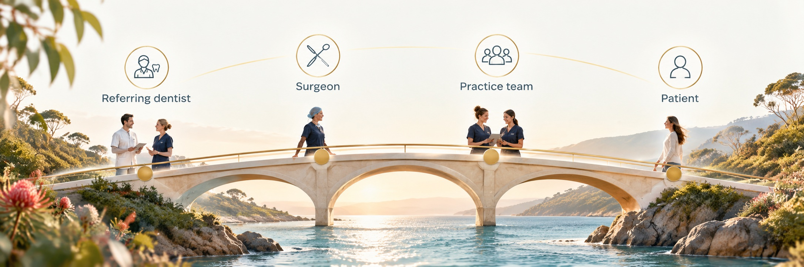

In development, looking to launch in Australia.
Can we create practice software together that supports everyone's journey in the care process?
The vision with Bridge is to make it a co-creative journey together. Helping bring dentists, surgeons they refer to, practice teams and patients into a system built by them, with billing that handles MBS and ADA items side by side. Built for oral and maxillofacial surgery and specialist dental practices. Created through community and participation. Here's a glimpse at what this is leading us to.
Join the Interest
What people have shared with us
Our intention is to build towards connection and service, and keeping important details focused and easy for everyone to see when it's needed.
Referring dentists
Sending a referral, then sending the attachments again. Could it be sent once and filed automatically? Could everything be sent easily and arrive and flow right into patient software?
Surgeons
Letters and hospital templates that don't fit how they work. Could templates bend to the surgeon instead?
Practice team
Retyping quotes and invoices after procedures. Could the schedule and the patient record share the work?
Billing
MBS and ADA items split across systems. Could they sit side by side, and flow into Xero or MYOB?
Patients
Filling in the same forms twice, and unclear quotes. Could the quote be clear before treatment?
Your existing tools
Systems that don't talk to each other. Could Bridge sit alongside the portals practices already use?
An idea we're exploring: Bridgeworld, a directory patients can book from
We'd love every practice using Bridge to have a free page, with no ads, no paid placement and no star ratings. Not only for patients, but a place where practitioners could discover one another too. Here's an early demo of how it might feel.
Explore the directory demoYour page, your words
Your logo and banner, plus a description of what you specialise in and why you love doing it.
Everything patients need
All your locations, practitioners, hours, phone numbers, email and directions in one place.
Live availability
We intend for Bridge practice software to link directly into your directory as it's updated and bookings happen.
New patient bookings
A built-in new patient form, with referral upload for specialists, that lands directly in your diary.
Bridge started inside a working oral and maxillofacial surgery practice that kept hitting the same walls.
Help shape Bridge as part of the Founding Circle
We're asking for interest and participants, including small groups of surgeons, dentists, practice managers, and billing staff to share input in helping build and design Bridge with us, with the intention it stays focused. But the main page with updates is open to everyone and feedback and questions will be welcomed.
Join the Interest
Tell us a little about your practice and tick the Founding Circle box.
Have a short chat
A 20-minute conversation about how your practice runs today and where software could grow to help.
Test early versions
Those who participate will be able to test versions and try Bridge with sample data and share experiences.
Grow with it
Use Bridge in your practice as it grows, and help shape what comes next.
Join the Interest
It's free and there's no commitment. We'll only contact you about Bridge.
(Please note that this is intended to begin in Australia and available there and the immediate areas like New Zealand only as this is explored. You may share feedback if you are outside of this area, but the future waitlist will only be for those in Australia initially.)
Please don't include any patient details in this form.
Questions practices ask
What is Bridge?
Bridge is practice management software being built for oral and maxillofacial surgery and specialist dental practices. It brings referrals, patient files, scheduling, quotes, invoices and billing into one system, so the people around each patient stay connected.
How might Bridge help with MBS and ADA billing?
It's one of the areas we're exploring. Oral and maxillofacial surgery practices often bill Medicare (MBS) and dental (ADA) items for the same patient. We'd like to make that work simpler and easier to understand, shaped by the practices taking part.
Who is Bridge for?
Oral and maxillofacial surgeons, specialist dental practices, and the practice managers and billing staff who run them. It's designed for practices that receive referrals from dentists and doctors and bill across medical and dental item numbers.
How do referrals work in Bridge?
When a referral and its attachments arrive through your referral portal, Bridge is designed to create the patient file and file the documents automatically, so your front desk isn't retyping details or uploading files by hand.
Does Bridge work with Xero or MYOB?
Xero and MYOB integration is part of the plan, so invoices and payments flow into your accounts without double entry. Each practice uses its own subscription to its preferred accounting software, which isn't included in the Bridge subscription itself.
How will Bridge protect patient information?
Bridge is being designed around Australia's Privacy Act and the Australian Privacy Principles, with health-grade hosting. We'll publish full security details before launch.
When will Bridge be available?
Bridge is in development and will launch in Australia. Other countries may follow.
What is the Bridgeworld directory?
A free directory included for every practice that uses Bridge, with separate searches for dentists and specialists. Each practice gets its own page with its logo, description, locations, practitioners, hours and contact details, and patients can book new patient appointments that go straight into the practice's Bridge schedule. There are no ads, paid placements or star ratings.
What is the Founding Circle?
A small group of surgeons, practice managers and billing staff who help shape Bridge before launch. Members share how their practice works, test early versions, and get access before anyone else.